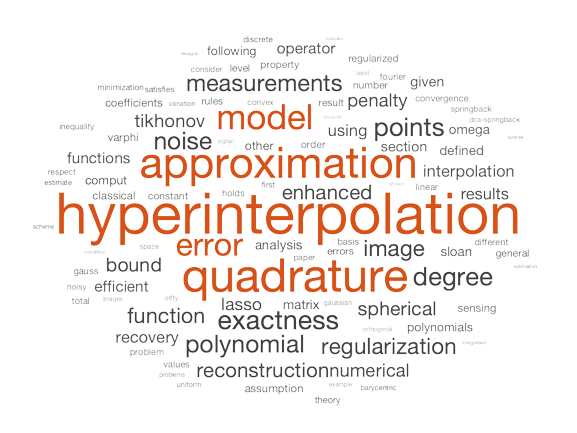

Hao-Ning Wu
PhD candidate
Department of Mathematics
The University of Hong Kong
Email: hnwu (at) hku (dot) hk
Address: Room 217, Run Run Shaw Building, HKU, Pok Fu Lam, Hong Kong SAR, China
Biography
I have been a PhD student at the Department of Mathematics, The University of Hong Kong, since 2019, and I am expected to graduate in 2023. I received my BSc degree in Mathematics from Jinan University, Guangzhou, China, in 2019.
My research interests span the fields of approximation theory, numerical analysis, and computational harmonic analysis, with an emphasis on information-based practice. That is, I am interested in algorithms for problems of continuous mathematics with partial, contaminated, and priced information. This kind of problem arises in, for example, approximating some function f or solving some equation Lu = f without full information about f but only some samples. These samples are taken from points distributed in structured (numerical analysis), random (learning theory), or scattered (optimal recovery) manners. I am also attracted by applications in scientific computing and mathematical data science.
Here is a word cloud for contents of my completed works, generated in MATLAB using the wordcloud function and the Text Analytics Toolbox, with words of 4 or less characters and non-mathematical words (e.g. linking words) deleted. (Oct 2022)
News
[Sept. 03, 2021] We have released MATLAB codes to reproduce figures in the paper of Lasso hyperinterpolation. [Link]
[Aug. 26, 2021] Our paper "Lasso hyperinterpolation over general regions", jointly with Dr. C. An, has been accepted for publication in SIAM Journal on Scientific Computing.
[Nov. 25, 2020] Our paper "Tikhonov regularization for polynomial approximation problems in Gauss quadrature points", jointly with Dr. C. An, has been accepted for publication in Inverse Problems. [Link]
[Aug. 06, 2019] My undergraduate thesis entitled Regularized least squares approximation using orthogonal polynomials has been selected as a merit undergraduate thesis by JNU. [Link]
[Jun. 04, 2019] New homepage online!
More about me
Every Chinese name has a specific and unique meaning. As for mine, Hao (浩) means “vast and torrential water”, and Ning (宁) means “to pacify and to stablize”. Literally, my name Hao-Ning depicts a scene where the vast and torrential water is eventually pacified. The official name on my passport is "Wu, Haoning", which is mainly used for travel. I publish as well as engage in academic activities under the name of Hao-Ning Wu. Just call me Haoning in daily and email conversations.
I am originally from Wanhsien, Sichuan (now Wanzhou district, Chongqing), a city in Southwestern China located at the easternmost pole of the Sichuan Basin, where the upper Yangtze River turns her direction from northeast to due east.
The Yangtze River drainage basin, the Sichuan Basin, and my hometown (red circle). (Credit: Keenan Pepper)